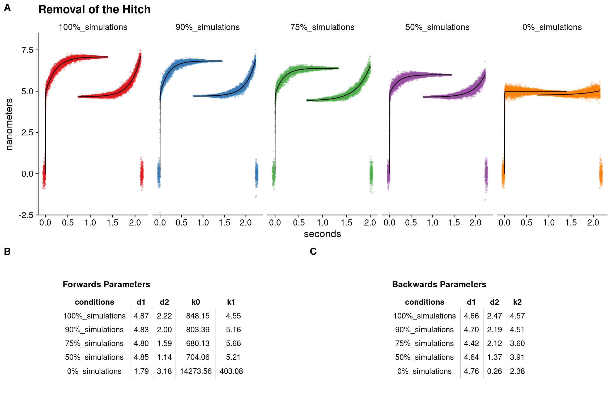
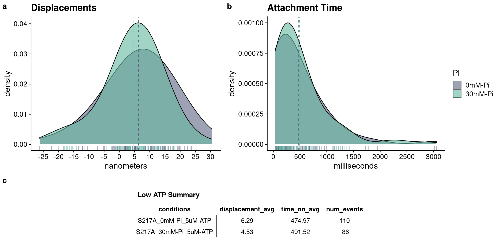

5 Myosin’s powerstroke occurs prior to the release of phosphate from the active site
This chapter of the dissertation has been published in Cytoskeleton and can be read in the journal’s formatted PDF version. The following chapter is a re-formatted version of the published article, but contains additional sections to expound upon the material not included in the publication due to journal restrictions on word count and number of figures. The full citation for the published article is “Scott, B., Marang, C., Woodward, M., & Debold, E. P. (2021). Myosin’s powerstroke occurs prior to the release of phosphate from the active site. Cytoskeleton, 1–14. https://doi.org/10.1002/cm.21682”
5.1 Introduction
Myosins are a family of motor proteins responsible for generating force and/or motion inside the cell (Foth, Goedecke, & Soldati, 2006). Muscle myosin II is the most well-characterized class and is the molecular motor that drives muscle contraction (Geeves & Holmes, 1999). Myosin Va has a motor domain that is highly homologous to myosin II (Foth et al., 2006) but its task is the intracellular transport of vesicles, walking processively along the 36 nm pseudo-repeat of actin filaments (Warshaw et al., 2005; Yildiz et al., 2003). Other forms of myosin and related molecular motors (e.g., kinesin) play important roles in intracellular transport, cell migration, the maintenance of cell structure, and even in mitosis (Foth et al., 2006).
Common to all myosins is the ability to convert the chemical energy of ATP into mechanical work, however key molecular details of this process remain unclear (Houdusse & Sweeney, 2016; Takagi, Homsher, Goldman, & Shuman, 2006). In a precisely coordinated sequence of steps the ATP is hydrolyzed off of actin and then the products are released while it is tightly bound to an actin filament (Holmes & Geeves, 2000; Sweeney & Houdusse, 2010). In a simple model of the cross-bridge cycle, ATP enters the active site with myosin tightly bound to actin in the apo or rigor state. This induces conformational changes that cause myosin to dissociate from actin (Geeves & Holmes, 2005). ATP is then hydrolyzed to ADP and Pi off of actin, but the products remain in the active site while myosin isdetached from actin. The re-binding to actin triggers the release of Pi and then ADP (Bagshaw & Trentham, 1974). The powerstroke is thought to occur close in time to the release of Pi(Holmes & Geeves, 2000; Houdusse & Sweeney, 2016; Sweeney & Houdusse, 2010; Takagi, Shuman, & Goldman, 2004) from the active site, however the exact sequence of events is unclear and is currently the source of a vigorous debate within the field (Gunther et al., 2020; Llinas et al., 2015; Muretta, Rohde, Johnsrud, Cornea, & Thomas, 2015; Trivedi et al., 2015; Woody, Winkelmann, Capitanio, Ostap, & Goldman, 2019). The key unanswered question is which event occurs first the powerstroke or the release of Pifrom the active site (Llinas et al., 2015; Woody et al., 2019)? In other words, does the mechanical event “gate” the biochemical changes, or do the chemical reactions “gate” the mechanical events? The answer to this question has important implications for the long-standing pursuit of the molecular basis of force-generation by muscle (Huxley & Simmons, 1971; Linari et al., 2015; Piazzesi et al., 2002; Veigel, Molloy, Schmitz, & Kendrick-Jones, 2003), but it also has broader implications for under-standing the fundamental nature of energy transduction by nucleotide-based motor proteins (Vale, 1996, 2003).
The timing of force-generation relative to Pi -release was first addressed in single skeletal muscle fibers (myosin II); these studies demonstrated that the development of force preceded the release of the first hydrolysis product, Pi(He et al., 1997; Sleep, Irving, & Burton, 2005). Consistent with these observations, the rapid release of caged-Pidemonstrated a clear delay in the depression of isometric force in muscle fibers (Dantzig, Goldman, Millar, Lacktis, & Homsher, 1992). These findings were consistent with force-generation preceding the release of Pi; however, the spatial and temporal resolution of these assays could not provide direct evidence of how and when a single myosin was progressing through its mechanical or biochemical transitions. More molecular level detail was provided by work using Förster Resonance Energy Transfer (FRET) probes on isolated myosin molecules in bulk solution assays, to directly monitor the position of the lever arm while also tracking the rate of P i-release using a rapid-reporting, phosphate-binding-protein (Muretta et al., 2015; Trivedi et al., 2015). These assays demonstrated that lever arm rotation occurred rapidly after myosin strongly bound to actin, at a rate of ≥350. s-1 , while Pi -release from the strongly bound state occurred at ~30. s-1 , suggesting that Pi -release occurs after lever arm rotation for myosin II. Similar findings were observed using myosin Va with the powerstroke occurring at 400. s-1 , while P i- release occurred at 200. s-1 (Trivedi et al., 2015). Similarly, single molecule observations, with microsecond time resolution, suggest that in cardiac myosin lever arm rotation may occur even faster, at 1000– 5000. s-1 (Woody et al., 2019), exceeding all estimates of P i-release from myosin II by at least an order of magnitude (Sleep et al., 2005). Thus, the findings from these types of functional assays support the hypothesis that the powerstroke occurs prior to P i-release.
However, x-ray crystallography structures of myosin, captured in various states of the cross-bridge cycle, suggest that P i-release must occur before lever arm rotation (Llinas et al., 2015; Sweeney & Houdusse, 2010). Specifically, structures of myosin trapped in diffeent nucleotide states using various nucleotide analogs show that the lever arm exists in a pre-powerstroke position when the gamma-Pi (or an equivalent analog) is still in the active site, and only achieves a post-powerstoke position when the gamma-Pi is absent from the active site (Robert-Paganin et al., 2020). Based on these and similar structural observations it was hypothesized that upon binding to actin, conformational changes in myosin’s active site occur that allow Pi to be released from the active site, and only then can the conformational changes that lead to lever arm rotation occur. Thus, this hypothesis posits that Pi -release “gates” the lever arm rotation, therefore the lever arm cannot rotate (i.e., the powerstroke cannot occur) until Pi has left the active site (Gulick et al., 2000; Rayment et al., 1993a).
In attempt to resolve the conflict between the functional and structural evidence, Llinas et al. (Llinas et al., 2015) formed myosin crystals soaked in elevated levels of Pifor varying durations before rapidly freezing the samples and performing x-ray crystallography. With a short exposure time before freezing, Piwas observed to be either at the exit of the escape tunnel adjacent to the active site (PiR1) or close to ADP in the nucleotide binding region (Pi R2, that is, still in the active site). Longer delays before freezing revealed that Pidiffused back into the active site close to ADP, and when it did, the lever arm returned to the prepowerstroke position. These observations led the authors to hypothesize that Pi leaves the active site very rapidly (and prior to the powerstroke) but stays in the exit tunnel before it is released into solution. Thus Pi -release from the active site may occur much more rapidly than Piappears in solution. This idea could therefore potentially explain why functional assays observe a rate of P i-release that is slower than the rate of force development and the powerstroke (Muretta et al., 2015; Trivedi et al., 2015). To further test this hypothesis, Llinas et al. (Llinas et al., 2015) introduced a mutation into switch I that was designed to slow Pi -release; by impeding it from entering the exit tunnel (S217A in myosin Va). The loss of the hydroxyl group, thought to make contact with the gamma phosphate of ATP (Forgacs et al., 2009; Smith & Rayment, 1996), is hypothesized to impede the entry of Pi into the exit tunnel (Llinas et al., 2015). Consistent with this hypothesis, actin-activated Pi-release is 3–10-fold slower in this mutation compared to WT (Forgacs et al., 2009; Gunther et al., 2020; Llinas et al., 2015). In addition, x-ray crystal structures of myosin soaked in high concentrations of Pi for 45 min show Piin the active site near ADP with myosin occupying a prepowerstroke state, supporting a Pi-release gated powerstroke (Llinas et al., 2015). Thus, the release of Pi may occur faster than the lever arm rotation, but it may not appear in solution immediately because it is still in the Piexit tunnel. If correct, this would provide an explanation for the discrepancy in the results between structural and functional findings. Indeed, it was recently proposed that this structural information provides a hypothesis that unifies prior findings from solution and functional experiments (Robert-Paganin et al., 2020).
This hypothesis is also important because it makes specific and testable predications about how a single myosin molecule should behave if Piis maintained in its active site. For example, because Pigates the powerstroke in this model, Pishould only rebind to actomyosin in a prepowerstroke state because Pican only leave or re-enter the active site when the lever arm is in a prepowerstroke position (Llinas et al., 2015; Sweeney & Houdusse, 2010). Indeed, in this model, the rebinding of Pi to the active site prevents the powerstroke from occurring rather than reversing it. By exposing myosin to elevated levels of Pi to maintain Piin the active site, lever arm rotation (i.e., powerstroke) generated by myosin after it binds to actin should be delayed or even prevented if Pi gates the powerstroke. Similarly, a myosin construct with a mutation that slows the entry of Piinto the Pi exit tunnel (e.g., S217A; Forgacs et al., 2009; Llinas et al., 2015), should also dramatically delay, or even prevent, myosin from generating a powerstroke once it strongly binds to actin. These effects would be most evident at the single molecule level where the generation of a powerstroke can be directly observed, and the duration of single actomyosin interactions directly quantified. Therefore, we directly tested this hypothesis using both approaches (high levels of Pi and the S217A mutation) in a single molecule laser trap assay using a single-headed construct of myosin Va.
5.2 Results
To determine the order of the powerstroke relative to P i-release from myosin’s active site, we directly observed the powertroke and strongly bound lifetime of a single-headed 1IQ construct of myosin Va using a three-bead single molecule laser trap assay (Figure 1a,b). In the first series of experiments, we examined the effect of 30 mM Pion the size of myosin’s powerstroke. To ensure that the elevated Piwould preferentially rebind to an actomyosin state with ADP still in the active site (AM.ADP), the ATP concentration was maintained at 100 μM for this set of experiments, a value well above the estimated km of 17 μM (Baker et al., 2004; Forgacs et al., 2009). Single actomyosin interactions (Figure 1c) were detected using an algorithm based on a Hidden–Markov Model (Smith et al., 2001), and transitions into and out of single binding events were located using a Changepoint analysis technique (Blackwell et al., 2021; see Section 5).
The 1 IQ construct of myosin Va generated a 7 ± 0.6 nm (Mean ± SEM) powerstroke (Figure 1b) that was unchanged by elevating Pi to 30 mM in the experimental solution (Figure 1e). The S217A con- struct also generated a step that was not statistically different from the WT myosin construct, either in the absence or presence of 30 mM Pi(Figure 1e). This suggests that when Pi-release is slowed from the active site, by either the S217A mutation (Figure 1b) or by Pi rebinding to the open active site, myosin generates the same size powerstroke upon binding to the actin filament.
To further address the relative timing of powerstroke and Pirelease, we examined the rate of the transition from the unbound/weakly bound state into the strongly bound state (Figure 2a) using an ensemble averaging analysis previously described (Sellers & Veigel, 2010; Veigel et al., 2003), with minor modifications. In this analysis, the start and end of identified actomyosin binding events were temporally aligned (see Section 5). The front ends of the binding events were fit to a double exponential (y = d1(1 exp [x* * k0 ]) + d2(1 exp[x* * k1 ])) to estimate the transition rate (k0) from the detached/weakly attached states to the postpowerstroke state, of the primary powerstroke (Figure 2a) and a second rate (k1) reflecting the transition associated with the secondary powerstroke (see Section 5 for additional details). The initial rate, k0 , was rapid and similar in the absence and presence of Pifor both constructs (604 and 467. s-1 for WT at 0 and 30 mM P i, and 597 and 757. s-1 for S217A at 0 and 30 mM Pi, respectively). This rate (k0) is thought to reflect several processes including the initial Brownian capture of the actin filament by myosin and the powerstroke (Blackwell et al., 2021; Veigel et al., 2003). Furthermore, the motion of the beads is damped by the viscous forces acting on the optically trapped 1-μm diameter bead, with a corner frequency of ~500 Hz, which limits this rate (Neuman & Block, 2004). Despite these temporal constraints, if Pi -release occurred prior to the powerstroke, 30 mM Pishould have reduced this rate dramatically. This was not observed (Figure 2a).
To further investigate whether a pause occurred prior to the powerstroke, we examined the slope of the first 2 ms of the initial transitions in the ensemble averaged data (Figure 2e). During the first 2 ms of this transition, the powerstroke of myosin generates an average force of 4pN (Finer, Simmons, & Spudich, 1994), enabling it to move the damped bead more quickly than 500. s-1 through solution, thus making it an even more sensitive measure for detecting a delay prior to the powerstroke. 2 ms was chosen because 90% of the powerstroke was completed within this time frame and a longer time window would include the plateau after the powerstroke was completed and thus would not reflect the time during the primary powerstroke (Figure 2). The slope of linear fits to these data show that for both constructs (WT and S217A), and conditions (0 and 30 mM Pi), the transition during the first 2 ms was extremely rapid and occurred immediately upon strongly binding to the actin filament (Figure 2e). This result strongly suggests that myosin generates the powerstroke immediately upon strongly binding to the actin filament and without a delay to allow for the release of Pi from the active site.
To confirm that our analyses could detect a delay in the generation of the powerstroke if it occurred, we performed simulations of single binding events in which myosin bound to actin and either, rapidly generated a powerstroke (Figure 2b) or paused with a time constant of 30 ms before generating a step (Figure 2c). The time constant for Pi -release was chosen to be consistent with the average measured rate of P i-release from the S217A construct from three different reports (Forgacs et al., 2009; Gunther et al., 2020; Llinas et al., 2015). Analysis of these simulated data confirmed that such a pause would have appeared as a zero slope during the first 2 ms of the binding event (Figure 2f) and would have been visible as a slowed rate of transition into the strongly bound state in the ensemble average analysis (Figure 2d). In contrast to this prediction for a Pi -release first model, we observed a very rapid transition from bound to unbound in the experimental data in both constructs, as well as in the absence and presence of added Pi (Figure 2e). There was also no significant effect on the rates of transitions in the ensemble average analysis in the experimental data (Figure 2d vs. a). Collectively, these findings suggest that neither elevated Pinor the S217A substitution slowed the rate of myosin’s powerstroke, or induced a pause prior to generation of the powerstroke.
While the elevated Pidid not affect the size of myosin’s powerstroke in either construct, we also examined the duration of binding events for evidence that Pirebound to myosin’s active site. Indeed, in the WT construct, elevated Pi reduced the average lifetime (Figure 3a,b) suggesting that Pirebound to actomyosin and accelerated myosin’s detachment from actin. The difference in the arithmetic means was not significant, but the mean in the WT 0 mM-Pi condition was quite far from the median, indicating a skew in the distribution (Figure 3b). Indeed, this was because the decreased lifetime was not uniform across the distribution of binding event durations, rather it was due to a reduction in the number of long duration binding events, especially those >400 ms. For example, in the presence of Pionly, one binding event lasted longer than 1,000 ms (Figure 3b). In contrast, in the absence of Pi , 25% of the events lasted longer than 500 ms (Figure 3a, main graph). The effect of Pi was most evident in a quantile-quantile (Q-Q) plot of binding event durations versus the theoretical exponential fit (Figure 3c). And a Kolmogorov–Smirnov test revealed that there was a trend (p = 0.06) toward a difference between the distribution for the absence versus presence of 30 mM Pi. This finding suggests that Pirebound to longer duration events in an AM.ADP state and accelerated detachment from actin. Elevated levels of Pi did not affect the event lifetimes of S217A, however in absence of Pithis construct has a shorter bound lifetime than the WT (Figure 3a,b), which likely reflects acceleration in the ADP-release rate caused by this substitution (Forgacs et al., 2009; Gunther et al., 2020). The accelerated rate of ADP-release may reduce its vulnerability to the rebinding of Pi , providing an explanation for the absence of a P i-induced reduction in binding event durations (Figure 3b).
The frequency of binding events was determined by dividing the total number of binding events by the total amount of time collected. The values were 0.99 and 0.98. s-1 for WT myosin Va in the absence and presence of 30 mM P i, respectively; and 0.99 and 1.00.s-1 for the S217A construct in the absence and presence of 30 mM Pi, respectively. These findings are consistent with myosin’s attachment rate being unaffected by elevated Pior by the presence of the S217A mutation.
To determine the fate of the cross-bridge following the powerstroke and the rebinding of Pi, we again used the ensembleaveraging analysis. A similar analysis has been used previously todetect and quantify the putative secondary powerstroke, or hitch, that is temporally associated with ADP-release by myosin (Sellers & Veigel, 2010; Veigel et al., 2003). We determined the size of the hitch by quantifying the difference in magnitude between the final displacements found at the ends of the forward ensembles and the displacement found at the beginning of the backwards ensembles, for each condition (Figure 2a). This analysis confirmed that WT myosin Va generates a hitch that was 25% of the total displacement (~2 nm) consistent with previous estimates using a myosin Va construct with a longer lever arm (Sellers & Veigel, 2010). Elevated levels of Pidid not affect the magnitude of the hitch, nor did the presence of the S217A mutation (Figure 2a). However, given that only the longest 25% of binding events were affected by Pi (Figure 3a,b) it is possible that the rebinding of Pidid occur prior to the hitch. This was also likely due to the limited amount of time spent in rigor at the final post-hitch displacement at the relatively high 100 μM [ATP], a concentration needed to ensure that Pi primarily rebound to the AM.ADP state.
Previous reports suggest that the rebinding of Pito actomyosin in the AM.ADP state can induce the reversal of the powerstroke, especially when the cross-bridge is strained (Woody et al., 2019). In our assay this would have appeared as displacement in the opposite direction to the initial powerstoke, which would have occurred sometime after the initial powerstroke but while myosin remained strongly bound to the actin filament. However, we did not see any evidence of this behavior either in the raw displacement records (Figure 1c), or in the ensemble average analysis (Figure 3a), where a reversal should have appeared as a downward slope in the transition out of a binding event, as others have observed (Woody et al., 2019).
It is possible that any reversal of the powerstroke and subsequent detachment from actin occurred faster than the resolution of our instrumentation (~2 ms). Therefore, we measured the effect of 30 mM Pi on the velocity of actin filaments in an in vitro motility assay (Vactin, Figure 3d); if Piinduced a reversal of the powerstroke we would expect that Vactin would be decreased by the presence of Pi in this assay. However, Vactin was unaffected by 30 mM Piconcentration (Figure 3c). Thus, under the present conditions, the rebinding of Pidoes not appear to cause a reversal of the powerstroke in an S1 construct of myosin Va, despite accelerating the detachment rate in WT of the longest 25% of events (Figure 3a).
5.3 Discussion
5.3.1 The powerstroke precedes Pi-release from the active site
Functional evidence from both myosin II and myosin V suggests that the powerstroke occurs prior to P i-release (Muretta et al., 2015; Sleep et al., 2005; Trivedi et al., 2015; Woody et al., 2019), while recent structural evidence from x-ray crystallography studies led to the notion that P i-release must occur prior to the powerstroke (Houdusse & Sweeney, 2016; Llinas et al., 2015; Robert-Paganin et al., 2020). Based on new structural insights, it was proposed (Llinas et al., 2015) that this seemingly contradictory evidence could be resolved if Pi is released from the active site very rapidly but pauses temporarily in the Pi exit tunnel, before being released into solution. Structural evidence was provided to support this model, including the use of the S217A mutation in switch I which slows P i-release from the active site (Forgacs et al., 2009; Llinas et al., 2015).
We directly tested this new model in two ways; first, by elevating P i, and second by introducing a mutation that slows Pi -release from the active site. Using the WT construct, we found that in the presence of 30 mM Pimyosin generated a powerstroke that was similar in size (Figure 1e) and rate (Figure 2e) to that observed in the absence of P i. In this experiment, the elevated Piin the buffer enables Pito rebind to the active site, therefore if P i-release gates the powerstroke, the Piwould rebind to myosin prior to the generation of a powerstroke. This would have been evident at the single molecule level as a reduction in the size and rate of the powerstroke. However, no reductions in the size or the rate of the powerstroke were observed (Figures 1 and 2). Additionally, the altered distribution of strongly bound lifetimes (Figure 3a–c) provides evidence that Pi rebinds to myosin’s active site, because Piis known to decrease myosin’s affinity for actin, thereby accelerating detachment (Geeves & Holmes, 2005; Holmes & Geeves, 2000; Takagi et al., 2004). Thus, the most likely scenario in this experiment (see blue arrows in Figure 4) is that myosin initially bound to the actin filament, and rapidly generated a powerstroke (≥500. s-1 , see Figure 2a,e) that was similar in size to that observed in the absence of Pi (Figure 1e). Myosin then released P i, at a rate of 150–200. s-1 (Cruz, Wells, Rosenfeld, Ostap, & Sweeney, 1999; Forgacs et al., 2009; Llinas et al., 2015; Rosenfeld & Sweeney, 2004; Trivedi et al., 2015), but in 25% of the events a new Pifrom solution quickly rebound in the active site while myosin was in an AM.ADP state. The rebinding of Pithen induced detachment from actin leading to a detached M.ADP.Pi state, which produced an alteration in event lifetimes (Figure 3a–c).
This scenario suggests that the rebinding of Pi induces detachment by inducing the opening of the cleft in the upper 50 kDa domain, which modulates myosin’s affinity for actin and is putatively coupled to the presence of Piin the active site (Geeves & Holmes, 2005). Interestingly, this suggests that there might be hysteresis in the transduction process, as myosin appears to be able to bind strongly to actin with Pi still in the active site during force-generation, but rapidly detaches from actin upon Pi -rebinding. We (Debold et al., 2013) and others (Linari, Caremani, & Lombardi, 2010) have suggested a model for this hysteresis based on observations in skeletal muscle myosin II.
In a second test of the P i-release-first model, we used a myosin Va S1 construct with S217A mutation in the switch I region of the active site, which has been shown to slow Pi -release from the active site by ~10-fold (Forgacs et al., 2009; Gunther et al., 2020; Llinas et al., 2015). Serine 217 (myosin Va numbering) is an absolutely conserved residue that is the first serine in the NDNSSRFG sequence of switch I (Forgacs et al., 2009). Its OH-group putatively forms hydrogen bonds with the gamma-phosphate, ATP and the NH2 of Arginine 215, and it is thought to participate in proton transfer during the hydrolysis process (Forgacs et al., 2009; Smith & Rayment, 1996). The S217A mutation removes the ability of the OH-group to participate in proton transfer and likely weakens the contacts between switch-I and the gamma-phosphate of ATP (Forgacs et al., 2009).
This mutation also appears to slow the weak- to strong-binding transition, based on observations from solution kinetics; an effect that likely also contributes to the reduced steady-state ATPase rate (Forgacs et al., 2009; Gunther et al., 2020). However, the most relevant effect for the present study is the 10-fold reduction in the release of Pi from actomyosin (Forgacs et al., 2009), which occurs by slowing its release from the active site (Llinas et al., 2015). Importantly, the slowed rate of Pi-release from this construct means it is not reliant on Pi rebinding to the active site as in the experiments with elevated Piin solution. This provides an independent test of the hypothesis that P i-release from the active site gates myosin’s powerstroke. The predicted outcome in the laser trap assay, however, is the same if Pi-release precedes the powerstroke. Myosin should bind to actin, and only after a long delay that allows for Pito be released from the active site, should it generate a powerstroke. Contrary to this prediction, we observed that the S217A construct did not affect the size (Figure 1e) or rate (Figure 2e) of the powerstroke generated, consistent with our cursory examination of this construct using a less sophisticated analysis (Gunther et al., 2020). Our simulations of a P i-release-first model confirmed that our analysis of these data had the sensitivity to detect a change in either variable (Figure 2b,c). This, like the observation with WT myosin in the presence of Pi , suggests that upon strongly binding to actin, myosin rapidly generates a powerstroke with Pi still in its active site.
These findings and conclusions are consistent with previous FRET-based studies showing that the powerstroke occurs at least twice as fast as Pi -release into solution (Muretta et al., 2015; Trivedi et al., 2015). However, the use of the S217A construct in the present investigation demonstrates that the powerstroke occurs while Pi is still in myosin’s active site. Therefore, these findings would be inconsistent with a model in which Piis released quickly from the active site before stalling the exit tunnel (Houdusse & Sweeney, 2016; Robert-Paganin et al., 2020; Sweeney & Houdusse, 2010) because this mutation prevents entry into the exit tunnel (Llinas et al., 2015). Our conclusion is also consistent with recent findings from cardiac muscle myosin using an ultra-fast laser trap assay where the rate of the powerstroke was estimated to be 1,000. s-1 under a 1.5pN resistive load (Woody et al., 2019), roughly 50-fold faster than Pi -release for cardiac myosin (Gunther et al., 2019; Malik et al., 2011). Similar rates of the powerstoke were reported in the first description of an ultrafast laser trap assay using fast skeletal muscle myosin II under a 1.5 pN resistive load (Capitanio et al., 2012), a rate 2 orders of magnitude faster than the 20–30. s-1 rate of Pi -release in solution reported for fast skeletal myosin II (Muretta et al., 2015). Interestingly, the rate of the powerstroke has been shown to increase with the applied resistive load (Capitanio et al., 2012; Woody et al., 2019) therefore the rate observed in the present study (≥500. s-1 ) under the minimal load of our laser trap assay (7 nm * 0.04 pN/nm ≈ 0.28pN) appears consistent with the 1000–5000 s-1 rate from 1.5 to 5 pN of resistive load in an ultra-fast laser trap assay using skeletal and cardiac myosin II (Capitanio et al., 2012; Woody et al., 2019).As indicated above the present findings are difficult to reconcile with the idea that Pi -release precedes the powerstroke, as has been suggested based on high resolution crystal structures (Houdusse & Sweeney, 2016; Robert-Paganin et al., 2020; Sweeney & Houdusse, 2010). Indeed, for our data to be consistent with a P i-release-first model, Piwould have to be released from the active site at >1000. s-1 , and then remain in the exit tunnel until it appeared in solution at a rate of ~150. s-1 for the WT myosin Va construct. Piwould have to remain in the exit tunnel for an even longer duration in the S217A construct, where the rate of Pi -release rate is reduced to 15–20. s-1 (Forgacs et al., 2009). Indeed, Pi would need to be released from the active site at >1000. s-1 , but remain in the exit tunnel for roughly 50 ms, before it is released into solution, at the rate measured for the S217A construct 15–20 . s-1 . This seems an inordinately long duration for Pito remain trapped in the exit tunnel given that the putative contacts thought to impede P i’s exit are weak electrostatic interactions. Therefore, a model in which the powerstroke occurs while Piremains in the active site, and thus precedes Pi release, seems the most plausible explanation for these findings (Figure 4).
Our findings also suggest that myosin transiently exists in a post powerstroke state while Pi remains bound in the active site; a structure that has yet to be captured using x-ray crystallography (Geeves & Holmes, 2005; Llinas et al., 2015; Rayment et al., 1993b; Smith & Rayment, 1996). The reasons for this are unclear, however there are several plausible explanations why this structural state might be difficult to capture; first among these is the inability to crystallize myosin in the presence of actin filaments. This structure is thought to be occupied only while myosin is strongly bound to the actin filament (Geeves & Holmes, 2005; Takagi et al., 2004; Woody et al., 2019), thus it may be extremely difficult to reproduce such a structure without an actin filament. While recent advances in cryo-electron microscopy may present an alternative method to obtain this structure, the speed of both the powerstroke ≥500, s-1 (Figure 2e) and Pi-release (150–200 s-1[Forgacs et al., 2009; Llinas et al., 2015; Trivediet al., 2015]) suggest the state is very transient and therefore will be difficult to capture by this methodology. This is supported by the observation that a prepowerstroke-like state can only be captured when myosin is trapped in a transition-like state using ADP and either beryllium, vanadate or aluminum fluoride (Dominguez, Freyzon, Trybus, & Cohen, 1998; Mentes et al., 2018; Reubold, Eschenburg, Becker, Kull, & Manstein, 2003; Smith & Rayment, 1996). It is also clear from single muscle fiber experiments (Debold et al., 2004; Hibberd et al., 1985) and more recently from single molecule studies using an ultra-fast load-clamp laser trap assay (Woody et al., 2019), that myosin’s affinity for Pi is strain-dependent, with Pimore readily rebinding to the active site under a high force opposing the direction of the powerstroke, a conclusion also reached based on experiments using myosin Va in a load-clamped laser trap (Sellers & Veigel, 2010). Such a strain would not be present under the conditions currently employed to obtain either x-ray crystallography or cryo-EM structures of myosin.
Our findings are, however, consistent with reports on myosin’s structural dynamics in solution using FRET probes, where lever arm rotation is observed to occur very rapidly (300–450. s-1 ) and is a least two-fold faster than the release of Piinto solution (Muretta et al., 2015; Trivedi et al., 2015). Our findings are also consistent with FRET studies demonstrating that, upon strongly binding to actin, the cleft in the actin-binding domain rapidly closes and that this closure is coupled to rotation of the lever arm from the pre- to postpowerstroke state (Conibear et al., 2003; Yengo et al., 2002). And it appears that the closure of the actin-binding cleft occurs prior to the release of Pi , based on a combination of FRET and kinetic experiments (Sun et al., 2008). This is also supported by recent x-ray crystallography structures showing that myosin exhibits a closed cleft during the weak- to strongly bound transition with ADP and Pi still in the active site (Franz et al., 2020). Taken together with the present observations, these findings suggest that formation of the strong-bond with actin is the structural event that triggers the powerstroke rather than the release of Pifrom the active site.
5.3.2 The myosin Va powerstroke occurs in two phases
It is a widely held view that Pidoes not readily rebind to myosin in the absence of a significant resistive load or strain (Geeves & Holmes, 2005; Sweeney & Houdusse, 2010; Takagi et al., 2004). However, the present findings demonstrate that in a single molecule laser trap assay, in which myosin experiences very low loads (~0.28 pN), elevated levels of Pialtered the distribution of event lifetimes (Figure 3b). At the ATP concentration used (100 μM), this provides evidence that Pi rebound to the active site in an AM.ADP state, and induced detachment from actin an AM.ADP. Pistate. Prior experiments using a laser trap assay capable of applying load to an attached cross-bridge suggested that Pi may only rebind to a strained crossbridge using either myosin Va (Sellers & Veigel, 2010) or cardiac myosin (Woody et al., 2019), however lower concentrations of Pi(10 mM) were used in these investigations, therefore we may have observed rebinding at lower loads due to the higher concentration of Pi levels (30 mM) increasing the probability of rebinding. Furthermore, our data suggest that only the longest lasting attachments were eliminated in the presence of elevated Pi(Figure 3a), therefore the combination of a high [Pi ] and long-lived AM.ADP state may be required to elicit rebinding under minimal resistive strain. Such an effect would be expected to reduce drag on actin filaments under unloaded conditions, as Pirebinding detaches the longest lived strongly bound crossbridges. Consistent with this idea, elevated Pi levels increase actin filament velocity in an in vitro assay (Debold et al., 2011), and unloaded shortening velocity in skinned single muscle fibers (Pate & Cooke, 1989). Pi -induced acceleration of detachment also appears to occur in myosin Va, where elevated levels of Pi shorten myosin Va’s run length on an actin filament in an unloaded, single molecule, TIRF assay (Baker et al., 2004).
5.3.3 What is the fate of the cross-bridge after Pi redbinds
When phosphate rebinds to myosin II’s active site in an AM.ADP state it accelerates detachment from actin (Baker et al., 2002; Debold et al., 2013; Takagi et al., 2004). The P i-induced decrease in event lifetime observed in the present study (Figure 3a) confirms that this also occurs in myosin Va, but what is the fate of the cross-bridge after Pirebinds to the active site? If the powerstroke can only occur after Pirelease from the active site, then it would be expected that the rebinding of Pi would prevent the powerstroke from occurring and then accelerate detachment from actin, as suggested based on structural observations (Llinas et al., 2015; Robert-Paganin et al., 2020; Sweeney & Houdusse, 2010). However, our observation that the powerstroke occurs rapidly upon binding to actin (Figures 1 and 2) is inconsistent with the powerstroke occurring after Pi -release. Our results suggest that myosin’s detachment prior to the generation of the powerstroke is not the fate of a cross-bridge following the rebinding of Pi to the active site.
In contrast, if the powerstroke precedes Pi-release from the active site, the powerstroke may be reversed once Pi rebinds to the active site, returning the cross-bridge to the prepowerstroke AM.ADP. Pi state from which detachment occurs rapidly (Dantzig et al., 1992; Takagi et al., 2004). Indeed, in single molecule laser trap assays, displacements in the opposite direction of the original powerstroke have been observed, in particular under a high resistive load, and may occur more readily in the presence of Pi (Takagi et al., 2004; Woody et al., 2019). However, the position of the lever arm was not directly monitored in these prior studies so it is not clear if the backward motion detected was a reverse of the lever arm rotation or if the high resistive load caused myosin to slip on actin (Debold et al., 2005). These observations were further complicated by the use of low ATP concentrations (1 μM), which increases the probability that Pi rebound not to an AM.ADP state but the rigor state, creating an AM. Pi state instead of an AM,ADP.Pi state (Amrute-Nayak et al., 2008).
In the present study we did not see evidence of a reversal of myosin’s powerstroke in the presence of elevated Pi , under any condition or using either construct (Figures 1a and 2a). If present, reversals should have been evident as an abrupt reversal of the displacement following a powerstroke while in a low variance state, but this was not seen in the raw displacement records (Figure 1a). Even if such reversals occurred with low frequency, they should have been evident as a downward slope at the back end of binding events in ensemble averaging, but again this was not observed for either construct or in the presence of Pi(Figure 2a). It is possible that such reversals occurred faster than the time resolution of our instrument (~2 ms) and therefore were invisible in the present study. If this was the case it would put time constraints on the rate of the reversal and the duration of the AM.ADP.Pi state following a reversal, indeed both events would have to occur at >500. s-1 to have been invisible in our analyses. A recent report, using cardiac myosin II, suggested that reversals occur as slow as 250 s-1 (Woody et al., 2019), thus it would have to occur more quickly in myosin Va for it to be invisible in the present investigation.
Alternatively, it is possible that myosin detaches from actin without reversing the powerstroke following P i-rebinding, as has been proposed (Debold et al., 2013). In this type of model, the rebinding of Piinduces detachment from a postpowerstroke state by introducing a Pi-dependent branch in the cross-bridge pathway (blue arrows, Figure 4). This kind of model can also explain the Pi-induced reduction in muscle force and offers an explanation for two observations that have been difficult to reconcile with a model containing a reversal of the powerstroke (Debold et al., 2013). Specifically, the P i-induced enhancement of actin filament velocity at low pH in the motility assay (Debold et al., 2011; Greenberg & Moore, 2010) and the maintenance of a high ATPase rate when Pi levels are elevated despite large reductions in isometric force of muscle (Linari et al., 2010). Indeed, in the present study elevated levels of Pi had little or no effect on actin fila- ment velocity in a motility assay using either the WT or S217A construct (Figure 3d). If Piinduced reversals of the powerstroke while myosin was strongly bound to actin, we would have expected to see a decrease in Vactin . Thus, a model of the cross-bridge cycle in which the rebinding of Pican induce detachment from a postpowerstroke state is the most plausible and provides the best explanation of functional and structural findings (Figure 4).
5.4 Conclusions
We used two independent approaches to maintain Piin myosin Va’s active site while directly observing its ability to bind to actin and generate a powerstroke. In both cases myosin generated a powerstroke rapidly upon binding to actin, providing strong evidence that myosin generates its powerstroke when Pi is still in its active site. This is consistent with a model in which the formation of the strongly bound state drives rotation of the lever arm and that this key force generating event occurs before the release of Pi from the active site (Muretta et al., 2015; Takagi et al., 2004; Trivedi et al., 2015). Thus, these findings provide crucial new insight into the molecular mechanism of force generation by myosin, and how it is coupled with the release of the gamma-Pi from myosin, and in doing so reveals new insight into how myosin transduces chemical energy into mechanical work.
5.5 Supplemental Material
Conceptual models of the simulated data.
The kinetic scheme for the S217A simulations is based on the values shown in Figure 4 of the main text of Chapter 5. a) Figures show the two different cross-bridge models using for single molecule simulations. In powerstroke-first simulation (top left) upon binding to actin myosin generated an instantaneous displacement of 6nm, with ADP and Pi still in the active site, 2) Pi is released then from a post-powestroke AM-D-Pi state, 3) ADP is released and is followed by the completion of the secondary powerstroke or hitch, and 4) myosin is left in a rigor state, AM, until ATP induces detachment at the rate corresponding to the second order dissociation constant and the ATP concentration of 100uM. b) The cross-bridge cycle used for the Pi-release-first model was the same as the powerstroke-first model except for the timing of the powerstroke. In these simulations upon binding actin myosin myosin does not generate a powerstroke, until Pi was released from a pre-powerstroke AM-D-Pi state at 30s-1. This creates a pause after myosin strongly-binds to the actin filament where there is no net displacement until Pi is released from the active site at which point in generates the same 6nm displacement. 2) ADP is then released from a post powerstroke state, which is followed by a 2nm secondary powerstroke, and 3) the AM rigor state persists until ATP induced detachment at the rate corresponding to the ATP concentration and the second-order binding constant shown in Figure 4 of the main text. c) Bar graphs showing the underlying lifetime distributions used to define the rate of each biochemical transition. Rates for Pi-release, ADP-release, and ATP binding were taken from values reported from solution kinetic studies as indicated in Figure 4 of the main text. The attachment rate of 1s-1 was taken from the measured frequency in the present data (see Figure 3b in the main text). The Brownian motion of the bead-actin-bead assembly was generated by sampling from a Gaussian distribution with a mean of 0 and standard deviation 8nm, the standard deviation was reduced to 4nm during a binding event. These values were chosen to match signal characteristics of the experimentally observed in displacement data records. Each of the above histogram displays representative results from 100,000 random samples from each of the exponential distributions. Distributions were truncated below 1 ms duration. (i.e. 5 datapoints at 5kHz), to match the time resolution of experimental data. The attachment rate was chosen to have a minimum time between events of 100 ms and a maximum time between events of 2.5 seconds, just to limit the size of the datasets generated. A single molecule event was constructed by randomly selecting a value from the power density function of each distribution and this value provided the amount of time that the respective event would spend in each kinetic step. The powerstroke was modeled as instantaneous, occurring in <200µs. In simultaneous in which the powerstroke occurred prior to Pi-release (powerstroke-first model) the displacement was made to occur simultaneous with the decrease in signal variance. In simulations where the Pi-release occurred prior to the powerstroke the rate of the displacement was the same but only occurred after Pi was release at mean value of 30s-1. All other rates of the kinetic transitions were identical between the two simulation protocols.
5.6 Detecting removal of the hitch
To probe the feasibility of the claim that a rebinding Pi can induce detachment prior to the hitch, which would in turn decrease the overall hitch size as seen in the ensemble averages, we simulated data with various percentages of events that completed the hitch. These simulations serve the purpose to demonstrate that if Pi rebinding does indeed detach myosin before realizing additional displacement from the hitch then we can attempt to estimate what percentage of events need to be effected by Pi-induced detachment in order to observe a noticeable effect in the ensemble averages. Datasets were simulated with the {lasertrapr} app containing 500 single molecule binding events. All events had a 5nm initial displacement accompanied by a 2nm hitch. The datasets were then analayzed and ensemble averaged using the {lasertrapr} app. Forwards ensembles were fit a double exponential and the backwards were with with a single exponential. Full forwards and backwards ensembles are shown in figure XX along with the table of the exponential fit parameters.

In the dataset where all events were allowed to complete the hitch (labeled as “100%_simulations) the double exponential estimate the initial step (d1) to be 4.8nm and the hitch (d2) 2.2nm. Interestingly, in the datasets that follow where 90%, 75%, and 50% of all events were permitted to proceed with a hitch and the detected hitch size was approximately 91%, 73%, and 52% of the hitch size as compared with the “control” 100% simulation group. These simulations show there is a possibility of 1) the ability of the analysis to be sensitive to changes in the size of the hitch, and 2) that the percentage decrease in the measured size of the hitch as estimated from the double exponential fits to the forward ensembles could be used as a method to estimate the percentage of events that did not undergo additional displacement with the hitch. For the case here in regards to high levels of Pi, we could possibly estimate that number/percentage events that were effected/ended by Pi-rebinding. In th real experimental data, the hitch size from FIGURE XX for the WT 30mM-Pi conditions was 94% of the control conditions indicating that if these described assumptions were to be true then only 6% events were effected (i.e. terminated) by Pi-rebinding. This would roughly correspond to 27 events. While the average time on for the WT 0mM-Pi conditions was 230ms, removing the longest 27 events from the experiments data set yields an average attachment time of 132 milliseconds which closely resembles the average attachment time from the WT 30mM-Pi conditions of 145ms.
Analyzing for a decrease in the size of the hitch will most likely provide the most robust method for determining if Pi-induced detachment can reduce the size of the hitch. Another option would be to see if the size of the overall displacement distribution would reduce, however, additional simulation in Figure XX show that this method is less sensitive to the disappearance of the hitch at high ATP concentrations. In these simulations, two data sets were simulated. Both had an initial stroke displacement of 5nm and one had a 2nm and one had no hitch. The data was simulated mimicking higher [ATP] and ATP binding rate (i.e. rigor lifetime) was simulated with a truncated exponential with a rate of 200/sec (Gunther 2020 measured myoV-WT at 2/uM/sec) and a minimum duration of 5 milliseconds. Data was analyzed with HM-Model/Changepoint and summarized. We were unable to detect a difference in the displacement distributions. This is most likely because the time spent at the final displacement (d2) during “rigor” is too short to influence the total step displacement during the step size calculation. In the single molecule analyzer, the step size is determined by the average of the middle 90% data points between the changepoint identified start and end of the event. The ends are trimmed to avoid averaging the transitions between populations, but this could also average in less of the final d2 displacement. Moreover, the ATP would probably have an effect on this as well since essentially the displacement average conducted by the analyzer is a weighted average of the d1 and d2 displacements. The relative weights would then be dependent on the rates of ADP-release and ATP-binding because these rates would dictate how much time should be spent in a given state/displacement.
Figure 5.1: Step size comparison. No signigicant differences found in the average displacement between two simulated conditions with and without the hitch.
##
## Welch Two Sample t-test
##
## data: displacement_nm by conditions
## t = -0.97926, df = 574.57, p-value = 0.3279
## alternative hypothesis: true difference in means between group hitch_simulation and group no-hitch_simulation is not equal to 0
## 95 percent confidence interval:
## -1.854002 0.620343
## sample estimates:
## mean in group hitch_simulation mean in group no-hitch_simulation
## 4.569154 5.1859845.7 What state is S217A detaching from?
In a previous section we demonstrated that the WT myosin was vulnerable to Pi rebinding as evidenced by a decrease in attachment lifetime and a skewed Q-Q plot. However, for the mutant S217A the attachment lifetimes were unchanged (143 vs 127 ms, 0mM vs 30mM-Pi). With this many questions arose - Why does the S217A under 0mM-Pi have faster attachment time as compared to the WT?, Why is S217A’s event lifetimes largely un-affected by 30mM-Pi?. There could be many different ways in which the results could have manifested - Was the slowed release of Pi from the active site causing a pre-mature detachment?, If Pi is slow to leave the active site, is it also slow to re-bind?, or possibly even Is the S217A impervious to Pi rebinding?.
In order to test these questions we repeated these experiments with the S217A under the same conditions, but we decreased the ATP concentration to 5uM ATP. If the slowed Pi from the active site was able to cause a premature detachment by “knocking itself off” from actin then decreasing the ATP should not increase the attachment lifetime as would be expected and would occur if ATP is lowered for a WT myosin ((spudich1994?)). If the attachment time at low ATP concentration is equivalent to the attachment time at high ATP for the S217A, then this result would suggest detachment from a reformed ADP.Pi state. However, if lowering ATP concentration increases the attachment time as compared to the higher ATP conditions, then most likely that S217A would be detaching from a rigor state.

Additional statistical tests show there are no differences between the 0mM-Pi and 30mM-Pi groups at low ATP in regards to displacements:
##
## Welch Two Sample t-test
##
## data: low_atp_0$displacement_nm and low_atp_30$displacement_nm
## t = 1.3269, df = 188.46, p-value = 0.1861
## alternative hypothesis: true difference in means is not equal to 0
## 95 percent confidence interval:
## -0.8518689 4.3528821
## sample estimates:
## mean of x mean of y
## 6.285300 4.534793or for attachment time:
##
## Kruskal-Wallis rank sum test
##
## data: time_on_ms by pH
## Kruskal-Wallis chi-squared = 1.0536, df = 1, p-value = 0.3047Since decreasing the ATP concentration increased the attachment lifetime of the S217A, the mutant is most likely detaching from a rigor state, which would also indicate detachment from rigor at the higher ATP concentration in the published results as well. While ATP is most likely ending the events for S217A, the attachment times were still ~two-fold greater in the S217A at high ATP concentration compared to the WT. The simplest explanation is that at high ATP concentration myosin’s attachment time is dominated by the ADP-bound state and the mutant has ~two-fold faster ADP release rate as measured by solution kinetics (Gunther et al. (2020)). Perhaps the most interesting finding here is that the S217A mutant was un-affected by 30mM-Pi in all experimental conditions (5uM, and 100uM-ATP). There were no changes to displacement or attachment times - could that mean that the S217A is not vulnerable to Pi-rebinding? There is no data that supports the ability for the S217A to rebind a Pi in this dataset. However, an important caveat here is that at a combined trap stiffness of 0.04 pN/nm in the present study, multiplied by our 7nm displacements in all conditions, the myosins were experiencing a very low (0.28 pN) resistive load. This is of importance to consider since myosin’s ability to rebind Pi is believed to be load sensitive (CITATIONS). Which makes you think, could a mutation in the switch 1 region of myosin’s active alter the load dependence of Pi-induced detachment? This would undoubtedly be a fruitful avenue to explore in future studies.
5.7.1 Exponential fits to attachment times
Since attachment times are exponentially distributed, the data can be transformed from a standard PDF (usually represented by a binned histogram) into a cumulative density distribution which is interpreted similarly to a survival curve. The empirical cumulative distribution function (ECDF) displays the the percentage of events that have been completed (y-axis) by a certain time period (x-axis). Myosin’s attachment time to actin is dependent on many factors which have underlying rates that determine the overall attachment time. These cumulative distributions of attachments times can be fit with 1, 2, or 3 component exponential curves to gain further insight into those rates/processes underlying the attachment times of the form for the triple exponential a la Marco Capitanio et al. (2012):
\[ y = A1*( 1-exp( -k1 * x ))) + A2*( 1- exp( -k2 * x )) + A3*( 1- exp( -k3 * x)) - Alost \] Removal of the additional exponential components yields the double and single exponential equations. The cumulative distributions for our attachment times are fit with 1, 2, and 3 exponential curves and displayed in Figure XX. Assuming the conclusion from the main text of Scott-Marang 2021 that myosin’s powerstroke occurs rapidly upon binding actin nd prior to the release of Pi, after force generation the time myosin then spends strongly bound to an actin filament is dependent on three rates 1) Pi-release, 2) ADP-release, and 3) the rate of ATP to rebind and induce detachment. Interestingly, the cumulative distribution of attachment times for the WT under 0mM-Pi was best fit by a triple exponential. Presumably, the rates would reflect the underlying rates of the 3 biochemical states that comprise myosin’s attachment time as detailed in the conceptual model in Figure 4 of the main text. Moreover, the WT at 30mM-Pi seems more reasonably fit by a 2-exp fit than with no Pi present which supports the model proposed in the main text of a Pi-induced detachment since the addition of Pi removes the need for a third exponential component to best describe the distribution. If this were the case the most likely explanation would be that the rate of the re-binding of Pi would compete with the rate of ADP-release from the active site, and if Pi rebinds prior to ADP-release then detachment occurs without the need of an ATP-induced detachment eliminating the probability of having longer events and needing the 3-exp component to fit the distribution.
Figure 5.2: Exponential fits to the cumalative distributions of attachment times. The observed data is in the thick grey line. 1-, 2-, and 3-component exponential fits are shown in the dotted-pink, dashed-green, and solid gold line respectively.
| myo | pi | type | Alost | A1 | k1 |
|---|---|---|---|---|---|
| myoV-WT | 0mM-Pi | 1-exp | 0.4350824 | 1.364900 | 11.809263 |
| myoV-WT | 30mM-Pi | 1-exp | 0.4177824 | 1.424976 | 9.645903 |
| myoV-S217A | 0mM-Pi | 1-exp | 0.4951658 | 1.477321 | 10.972758 |
| myoV-S217A | 30mM-Pi | 1-exp | 0.5352932 | 1.587078 | 10.220117 |
| myo | pi | type | Alost | A1 | k1 | A2 | k2 |
|---|---|---|---|---|---|---|---|
| myoV-WT | 0mM-Pi | 2-exp | -2.8883601 | -3.435291 | 128.75123 | 1.467507 | 12.91284 |
| myoV-WT | 30mM-Pi | 2-exp | -0.8095855 | -1.347415 | 80.56898 | 1.526716 | 10.65564 |
| myoV-S217A | 0mM-Pi | 2-exp | -1.8880768 | -2.557349 | 89.01682 | 1.634570 | 12.32603 |
| myoV-S217A | 30mM-Pi | 2-exp | -0.4275459 | -3.709541 | 30.02066 | 4.256695 | 18.20712 |
| myo | pi | type | Alost | A1 | k1 | A2 | k2 | A3 | k3 |
|---|---|---|---|---|---|---|---|---|---|
| myoV-WT | 0mM-Pi | 3-exp | -0.6282920 | -5.538877 | 41.87583 | 5.5049989 | 30.53690 | 0.3817569 | 3.638942 |
| myoV-WT | 30mM-Pi | 3-exp | -0.4668085 | -1.562186 | 55.33599 | 0.7026435 | 32.83311 | 1.3865160 | 10.023322 |
| myoV-S217A | 0mM-Pi | 3-exp | -0.5488499 | -9.580457 | 35.12021 | 9.3694913 | 30.14432 | 0.6585705 | 6.955534 |
| myoV-S217A | 30mM-Pi | 3-exp | -0.4461448 | -9.514064 | 26.36782 | 9.9907550 | 21.62430 | 0.1518810 | 1.121036 |